数据来源：知识星球「南半球聊财经」星主 Jason 不跪当天发帖。时间为浏览器本地时区（美西）。 当天发帖数量：15 帖，配图共 30 张。
今日要点速览
今天 Jason 的帖子集中在三条主线。第一条是中国房地产与财政的微妙转向：一线城市二手房 5 月环比转正、但全国整体仍在磨底（野村、国金），同时财政出现 2023 年以来罕见的"赤字收窄"，并伴随"从投资于项目转向投资于人"的结构性讨论（高盛、华创、Bloomberg、招商银行）。第二条是全球的 risk-off（避险）情绪：美元走强叠加对美光业绩的过高预期，韩国股市单日闪崩约 10%，全球科技股、半导体股集体回调（JPM、Bloomberg）。第三条是产业与地缘：西方稀土永磁要追上中国仍需付"安全溢价"（摩根士丹利），中国光伏需求低谷被拉长到 2028 年以后（高盛），美伊核谈"缓步推进"压制油价至 73 美元（zerohedge）。此外他还点名了追觅"三年破万亿"故事背后，地方政府产业引导基金的"数字注水"风险。
一句话串起来：国内在"控支出、调结构、稳楼市"，海外在"美元走强、拥挤交易去杠杆"，产业和地缘则给出了稀土、光伏、原油三条中期线索。
帖 1 · 16:50 · 一线城市二手房回暖掩盖不了全国的低迷（野村）
标签：#房价#
帖子原文
野村：上海、深圳、北京和广州等一线城市的二手房价格在 5 月份均出现环比上涨，其中上海和深圳涨幅达到 0.6%，然而，这种局部回暖无法掩盖全国房地产市场的整体低迷。大多数二线及以下城市的房价跌幅仍在扩大，导致 5 月份全国 70 个大中城市二手住宅价格平均环比降幅扩大至 0.26%。AI 繁荣虽然推动了科技股上涨，并通过财富效应和金融从业者收入增加利好上海和深圳的楼市，但这种效应分布极不均匀，主要惠及高净值人群，加剧了社会不平等，且对整体经济的提振作用有限。
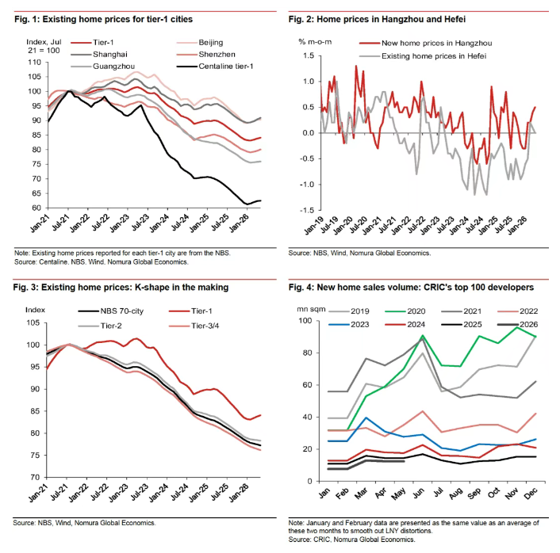
一句话核心：楼市出现"一线热、全国冷"的分化，回暖靠的是 AI 财富效应，而不是普惠的基本面修复。
背景与关键数据
- "环比"指的是和上个月比（month-on-month）。上海、深圳 5 月二手房环比 +0.6%，是回暖信号；但全国 70 城二手住宅环比 -0.26%，而且降幅还在扩大，说明大多数城市还在跌。
- "70 个大中城市房价指数"是国家统计局每月公布的房地产风向标，覆盖一线、二线、三四线，是判断楼市冷暖最权威的官方数据。
- "财富效应"（wealth effect）指资产（股票、房子）涨价让人觉得自己更有钱、于是更敢消费或买房。这里野村的逻辑是：AI 行情让科技股大涨 → 高净值人群和金融从业者赚钱 → 钱流入上海/深圳的高端楼市。
图片解读：这是野村的四联图。
- 左上（Fig 1）：一线城市二手房价指数（2021 年 7 月=100）。四个一线城市都从 2021 年的高点一路下滑到约 65–75，最近出现小幅回勾——这就是"局部回暖"。
- 右上（Fig 2）：杭州、合肥的新房 vs 二手房环比，上下剧烈震荡，说明二三线城市价格还很不稳。
- 左下（Fig 3）：标题直接写"K 型分化正在形成"——一线（红）相对抗跌、二线（橙）次之、三四线（深蓝）跌得最惨，几条线像字母 K 一样张开。
- 右下（Fig 4）：百强房企月度销售面积，2026 年（如有）这条线明显低于往年，说明成交量整体仍弱。
为什么重要 / 对市场和经济的含义：房地产是中国居民最大的资产，也是地方财政（卖地收入）的命脉。"一线企稳"对情绪有帮助，但如果只是高端人群的财富效应在托底，对消费、对地方土地财政的整体拉动就有限。Jason 想强调的是：别被一线城市的标题数字骗了，全国楼市的"底"还没真正夯实，而且这一轮回暖加剧了贫富与城市分化。
延伸知识：什么是"K 型复苏/分化"？经济或资产在一次冲击后，不同群体走出完全相反的两条路——上面一撇（高收入、核心资产）向上，下面一捺（低收入、边缘资产）继续向下，整体看似"平均企稳"，实则内部撕裂。它和传统的"V 型反弹"（齐涨齐落）最大的区别就是"平均数掩盖了结构"。看楼市、看就业、看消费时，都要多问一句"平均背后是谁在涨、谁在跌"。
帖 2 · 16:35 · "招银算命"：招商银行的 2026 年中国经济预测表
标签：#经济数据#
帖子原文
招银算命
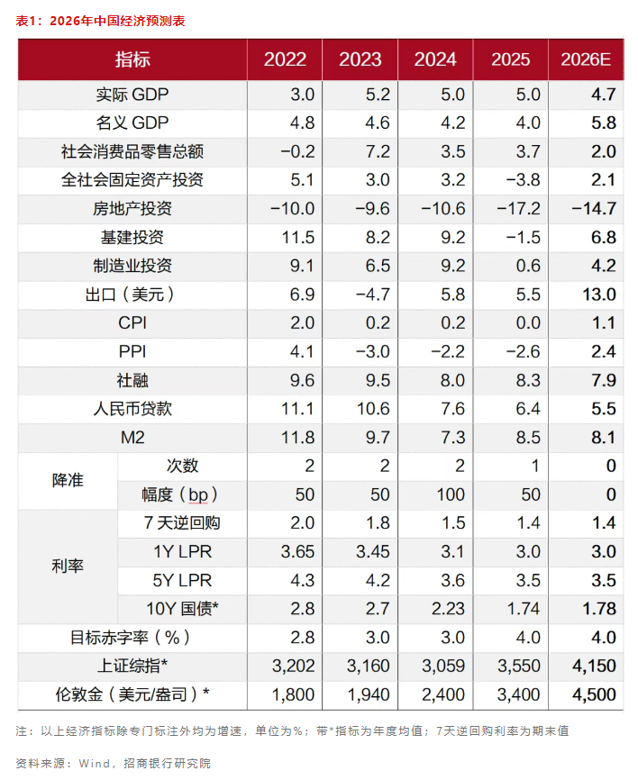
一句话核心："算命"是 Jason 的调侃说法，这是招商银行对 2026 年中国主要宏观指标的一张预测全景表。
背景与关键数据：表格列出 2022→2025 实际值与 2026E（E=Estimate 预测）。几行关键预测：
- 实际 GDP：5.0%（2025）→ 4.7%（2026E），温和放缓。
- 名义 GDP：4.0% → 5.8%，明显反弹——这是最值得注意的一行（见下方延伸知识）。
- CPI：约 0.2% → 回升至约 0.5%；PPI：从约 -2% 转正。
- 房地产投资：仍是 -14.7%，深度负增长，说明地产拖累还在。
- 出口（美元）：预测 +13%，相当乐观。
- 利率：1 年期 LPR 3.0%→2.8%、5 年期 LPR 3.5%→3.3%、10 年国债约 1.78%，即继续降息。
- 上证综指目标 4150，伦敦金 4500 美元/盎司。
图片解读：表头从左到右是"指标 / 2022 / 2023 / 2024 / 2025 / 2026E"。红色块是表格标题与年份栏。重点看 2025 实际值和 2026E 预测值这两列的对比：消费（社零）从 3.7% 降到 2.0%、固定资产投资由弱转稍强（-3.8%→2.1%）、名义 GDP 和 PPI 由降转升，是这张"命盘"的核心变化。
为什么重要 / 对市场和经济的含义：券商年度预测表是观察"主流卖方共识"的窗口。招行这张表透露的核心判断是**"实际增速略降、但名义增速和价格回升"**，也就是市场期待的"再通胀"（reflation）。如果 PPI、名义 GDP 真的回升，企业营收和盈利、A 股估值都会受益（上证看 4150）——这也是为什么 Jason 用"算命"二字：这些都是基于假设的预测，能不能兑现要持续验证。
延伸知识：名义 GDP vs 实际 GDP。实际 GDP 剔除了物价变化，衡量"东西的量"；名义 GDP 含物价，衡量"按当年价格算的钱"。两者之差近似于"GDP 平减指数"（整体物价）。过去两年中国"实际增速不低、但名义增速更低"，说明在通缩压力下"量在涨、价在跌"，企业体感很差（增收不增利）。招行预测 2026 年名义反超实际，本质是在赌通缩见底、温和再通胀——这是判断企业盈利和股市的关键变量。
帖 3 · 16:31 · 楼市分面积段：豪宅抗跌、微型户型率先企稳（国金）
标签：#房价#
帖子原文
国金：2025 年至今重点 10 城分面积段价格走势，豪华户型更抗跌，微型（<50 平）率先企稳，目前已较底部反弹 0.34%。 随着市场进入成交淡季，未来可能出现两种情形。情形一：如果成交价环比仍能维持在 0 附近甚至环比涨幅走阔，代表楼市止跌的趋势得到确认和延续，随着市场进入 9、10 月的成交旺季，房价有望加速修复。情形二：如果成交价环比再度下跌，并且跌幅逐渐走阔，则意味着楼市止跌进程受阻，在全国层面的地产政策缺位的情况下，磨底期将持续更长时间。
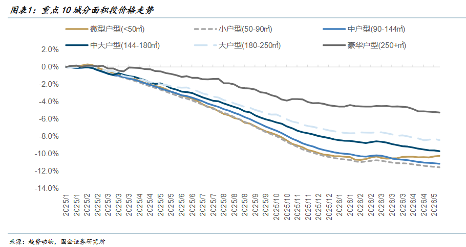
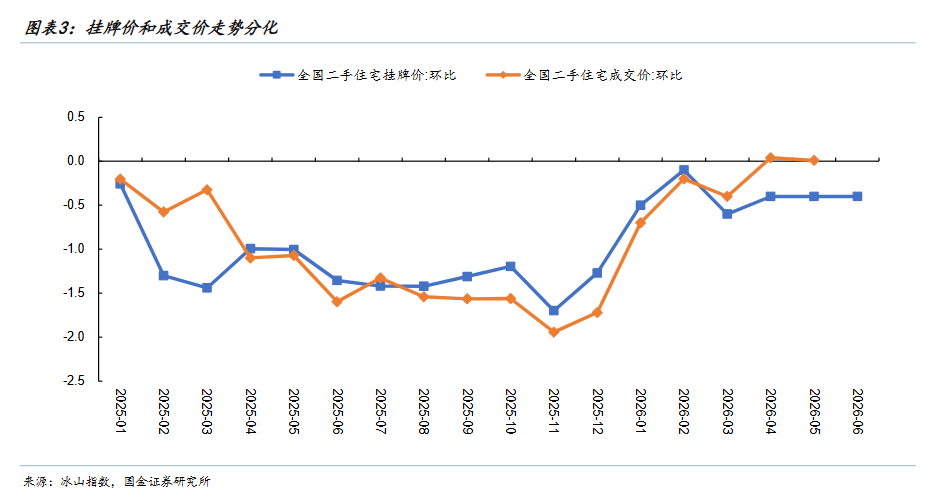
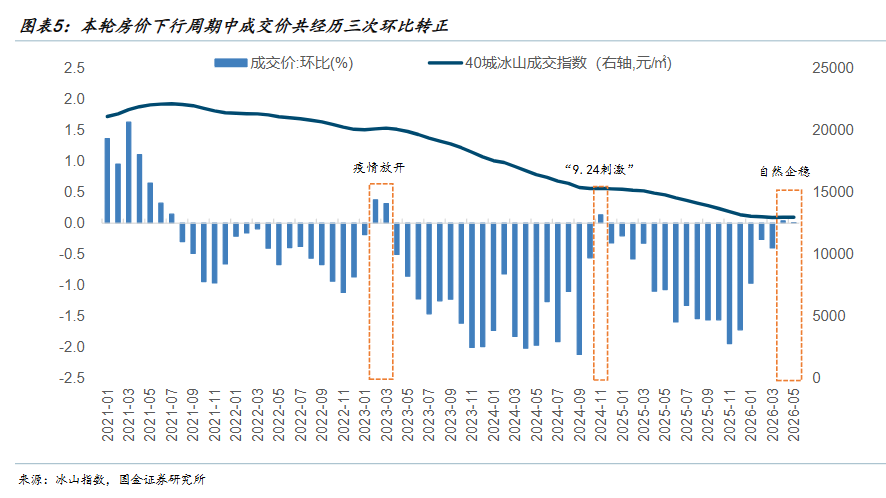
一句话核心：楼市止跌的迹象出现在"两头"——豪宅最抗跌、小户型最先反弹，但能否延续要看淡季成交，存在"确认企稳"和"二次探底"两种剧本。
背景与关键数据
- "分面积段"就是按房子大小把成交分组：微型 <50㎡、小户型 50–90㎡……一直到豪华 250㎡ 以上。
- "较底部反弹 0.34%"：微型户型价格从最低点回升了 0.34%，幅度很小，只能算"止跌"而非"上涨"。
- "成交淡季/旺季"：中国楼市有季节性，"金九银十"（9、10 月）通常是成交高峰。
图片解读
- 图表 1（分面积段价格走势）：6 条线代表 6 种户型，从 2025 年初的 0% 一路下滑。灰色的豪华户型（250㎡+）跌得最浅（约 -5%），最底部是微型/小户型（约 -11%~-12%），但最右端这些线开始走平、微微上翘，对应"率先企稳"。
- 图表 3（挂牌价 vs 成交价环比）：蓝线是业主的"挂牌价"（要价），橙线是真实"成交价"。两条线 2025 年全程为负，到 2026 年 4 月成交价首次回到 0 以上——买卖双方的价格预期开始收敛。
- 图表 5（本轮下行经历三次环比转正）：柱子是成交价环比，深蓝线是 40 城价格指数（右轴，元/㎡）。三个橙色虚线框分别标注"疫情放开""9.24 刺激""自然企稳"三次反弹。注意：价格指数（线）从约 2.2 万一路跌到约 1.2 万元/㎡，整体仍在下台阶，只是环比月度数据三度翻红。
为什么重要 / 对市场和经济的含义：这帖给了一个非常实用的判断框架——看楼市不是看"涨没涨"，而是看"环比能不能站稳 0 轴"。"自然企稳"（没有大刺激、靠市场自身力量止跌）如果成立，是比政策强刺激更健康的信号；但 Jason 引用国金的两种情形提醒：淡季是试金石，若再度下跌则磨底期更长。对地产链（建材、家电、银行按揭）和地方土地财政都是关键变量。
延伸知识："挂牌价"和"成交价"的差（议价空间）是楼市冷暖的温度计。市场差时，业主要价高、买家压价狠，两者裂口大、成交价持续低于挂牌价；市场回暖时，裂口收窄。所以图表 3 里两条线"由分到合"，往往比单看价格涨跌更早反映情绪拐点。这和股票里"买卖价差（bid-ask spread）"收窄代表流动性改善是同一个道理。
帖 4 · 15:58 · 城投评级被下调，非标舆情是导火索（国泰海通）
标签：#TAX#
帖子原文
国泰海通：近期城投主体评级调降或与非标舆情相关，我们认为，当前高利差且有过舆情的 AAA 城投平台，仍存评级调降的可能性，由于调降后可能出现持续估值跳升，建议对此类主体保持谨慎 （看到个以前的客户。。要我说 AA 也高了）
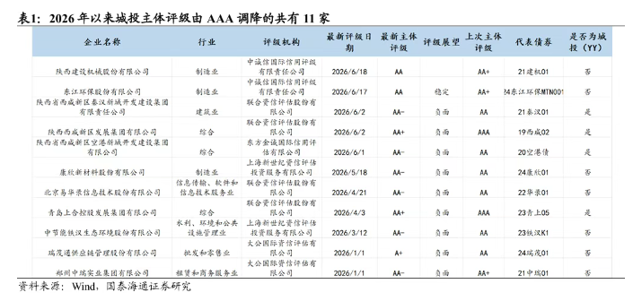
一句话核心：一批高评级城投被下调评级，导火索是"非标"违约传闻，债券投资者要小心"评级下调 → 价格暴跌"的连锁反应。
背景与关键数据
- 城投（城市投资平台）：地方政府设立的融资公司，替政府修路、建园区、搞基建，是中国地方债务的核心载体。
- 主体评级：评级机构给发债企业的信用等级，AAA 最高，往下是 AA+、AA……评级越低，违约风险越高、借钱越贵。
- 非标（非标准化债权）：指不在公开交易所交易的融资，比如信托、定融、私募债等，透明度低、风险高。"非标舆情"就是市场传出某城投的非标产品要逾期/违约的消息。
- 利差（spread）：城投债收益率相对国债的超出部分。利差越高，说明市场要求的风险补偿越高、越不信任它。
图片解读：这是国泰海通整理的表——"2026 年以来主体评级由 AAA 调降的共有 11 家"。表头含企业名称、行业、评级机构、最新评级日期、最新主体评级、评级展望、上次评级、代表债券、是否含城投。可以看到名单里集中出现陕西的平台（陕西建工、陕西路桥、渭南、韩城、西咸新区等），大多由 AAA 下调到 AA+。说明这一轮下调有明显的"区域集中"特征。
为什么重要 / 对市场和经济的含义：评级下调对债券是"利空硬伤"——很多机构（银行、保险、公募）有"只能持有 AAA/AA+ 以上"的内部规定，一旦被下调，就会被迫抛售，导致债券价格"持续估值跳升"（这里"估值跳升"指收益率跳升、即价格大跌）。Jason 那句"AA 也高了"是行话玩笑，意思是连 AA 评级他都觉得给高了，反映他对部分弱资质城投的谨慎。这是观察地方债务风险是否在扩散的一手信号。
延伸知识：评级被下调为什么会引发"强制抛售螺旋"？ 因为大量资管产品的合同/监管里写死了持仓的最低评级门槛（投资级 vs 垃圾级）。当一只债跌破门槛，持有人无论价格多差都得卖，卖压又压低价格、推高收益率，可能波及同区域其它平台。2008 年很多结构化产品的崩塌、以及历次"债灾"，背后都有这种"评级 → 强制平仓"的反身性。所以信用债的风险，往往不是慢慢释放，而是"评级一动、瞬间重定价"。
帖 5 · 15:52 · 西方稀土永磁追赶中国，瓶颈不在建厂而在"中间环节"（摩根士丹利）
标签：#经济数据#
帖子原文
摩根斯坦利：西方正在加快建设中国以外的稀土永磁产能，但真正瓶颈不只是"建磁材厂"，而是氧化物到金属/合金的中间环节、工艺控制、客户认证和成本竞争力。专家认为，美国 NdFeB，即钕铁硼永磁产能，到 2028 年可能达到约 2.8 万吨/年；如果算上已融资和潜在项目，可能达到 3.5 万吨/年，2028 年后甚至可能进一步升至 5 万–5.5 万吨/年。这已经明显高于美国当前从中国、越南和欧洲进口的大块磁体约 8500 吨/年。专家特别指出，西方供应链缺失的关键环节是：氧化物到金属的转化，以及 strip-cast alloy 条带铸造合金生产。专家的判断是西方生产商大约 3 年内可以追上中国磁体质量，但短期很难追上中国成本。这意味着西方稀土磁体产业必须依赖某种形式的"安全溢价"，这也是特朗普提到的高价购买。
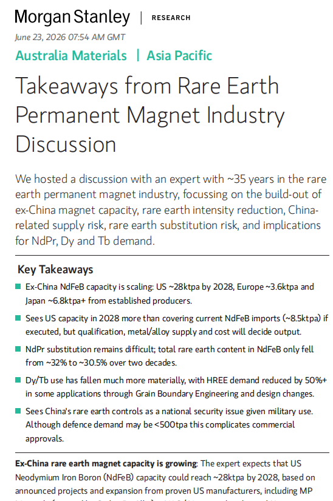
一句话核心：西方能把稀土磁铁厂建起来、质量也能追上，但卡脖子的是"氧化物变金属"这一步和成本，最终只能靠政府出"安全溢价"买单。
背景与关键数据
- 稀土永磁 / NdFeB（钕铁硼）：性能最强的永磁体，是电动车电机、风电、机器人、导弹/战机的核心材料。中国掌握全球绝大部分产能。
- ktpa = 千吨/年（kilotonnes per annum）。美国 2028 年产能约 2.8 万吨/年（28 ktpa），远高于当前进口的 8500 吨/年。
- 真正的瓶颈：不是"组装磁铁"，而是把稀土"氧化物"冶炼成"金属/合金"的化工环节（污染重、工艺难、认证慢），以及成本竞争力。
- 客户认证：汽车、军工对磁体有严苛的长期验证流程，新供应商进入很慢。
图片解读：这是摩根士丹利 2026 年 6 月 23 日的研报首页，标题"Takeaways from Rare Earth Permanent Magnet Industry Discussion"。Key Takeaways 几条要点正好对应正文：美国 NdFeB 2028 年约 28 ktpa、欧洲约 3.6 ktpa、日本约 6.8 ktpa+；NdPr 替代很难（20 年里稀土含量只从 ~32% 降到 ~30.5%）；通过"晶界工程（Grain Boundary Engineering）"让重稀土 Dy/Tb 用量降了 50%+；并把中国的稀土管制视为"国家安全"议题。
为什么重要 / 对市场和经济的含义：稀土是中美博弈里中国手上的"非对称王牌"。大摩这份报告的潜台词是：西方"去中国化"是真实趋势，但要 3 年以上、且成本更高，所以会出现"政府/军方愿意为供应链安全付溢价"的新市场。对投资来说，这利好海外稀土磁体公司（靠"安全溢价"获得超额利润），但也意味着民用领域（电车）短期仍离不开中国成本优势。
延伸知识：什么是"安全溢价（security premium）"？ 当一种商品不只是经济品、还是战略品时，买家愿意为"供应可靠、不被卡脖子"多付钱，哪怕它比市场价贵。芯片（美国《芯片法案》补贴本土产能）、能源（欧洲高价买美国 LNG 替代俄气）、稀土都是例子。它的本质是把"国家安全"内部化进价格——市场效率让位于供应链韧性。理解这个概念，就能看懂很多"明明更贵却还要自己造"的产业政策。
帖 6 · 15:46 · 特朗普私下鼓励泽连斯基"更大胆"，背景是俄油出口创新高（zerohedge）
标签：#金融#
帖子原文
zerohedge：乌克兰媒体披露特朗普私下告诉泽连斯基对俄罗斯采取"更大胆行动"，背景是俄罗斯今年迄今为止的石油出口量创历史新高
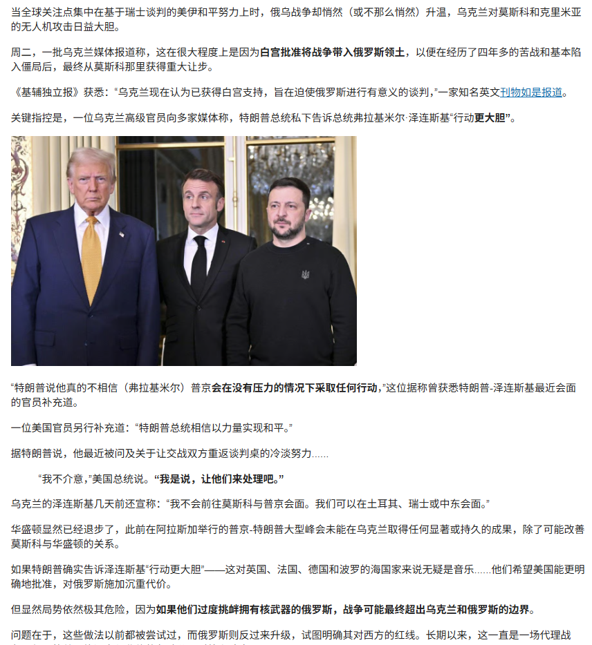
一句话核心：特朗普私下对乌克兰放话"可以更激进"，而俄罗斯靠创纪录的石油出口在为战争"输血"。
背景与关键数据
- 消息源是 zerohedge（一个立场鲜明、偏空/偏怀疑的财经博客）转述乌克兰媒体，属于未经官方证实的传闻，要打折扣看。
- "俄油出口创历史新高"是关键的经济背景：石油是俄罗斯最大的外汇和财政来源，出口越多，越能扛住制裁、维持战争开支。
图片解读：配图是特朗普、马克龙、泽连斯基三人的合影截图，下方是事件相关的中文转述文字。图片本身是新闻配图，信息以文字为主。
为什么重要 / 对市场和经济的含义：俄乌局势直接牵动能源价格和避险情绪。逻辑链是：地缘升级风险 → 原油供给担忧 → 油价波动 → 通胀与各国央行政策。但这帖也点出一个反直觉的事实：尽管制裁不断，俄油出口反而创新高，说明制裁的"漏斗效应"明显（通过影子船队、转口、折价卖给中印等绕开），这会影响市场对"制裁能否真正压制俄罗斯"的判断。
延伸知识：石油如何成为地缘政治的"财政命脉"？ 对产油大国，原油出口收入往往占财政的大头。所以制裁方常用"价格上限（price cap）"等手段，试图让俄罗斯"还能卖、但卖不上价"。现实中，全球对石油的刚需 + 影子船队，使得封锁很难彻底。把"出口量"和"出口价"分开看——量创新高但若被迫折价，实际收入未必同步创高——是分析制裁效果的关键视角。
帖 7 · 15:37 · 韩国股市闪崩 10%：是拥挤交易去杠杆，不是基本面崩坏（JPM）
标签：#股市#
帖子原文
JPM：韩国股市这次暴跌 10%，外国投资者和本地机构合计净卖出超过 35 亿美元韩国股票。更像是 AI/存储芯片拥挤交易的一次快速去杠杆，而不是韩国基本面突然崩坏。历史上，韩国类似"闪崩"之后，短期 3 天和 20 天回报往往是正的；但这一次能否反弹，关键要看美光业绩能不能满足已经很高的买方预期。韩国市场的问题不是没人看好，而是太多人已经看好。KOSPI 年初至今仍上涨约 95%，过去一年上涨约 190%。在这种涨幅后，只要 AI 存储链预期稍微动摇，就容易出现暴力回撤。
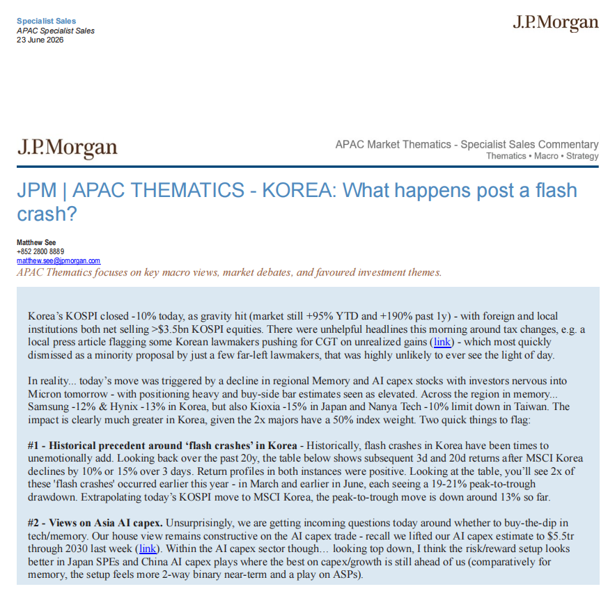
一句话核心：韩股暴跌 10% 不是因为韩国变差了，而是因为太多人挤在同一笔"AI 存储芯片"的多头交易里，一有风吹草动就踩踏。
背景与关键数据
- KOSPI 是韩国综合股指。年初至今 +95%、过去一年 +190%——这是惊人的涨幅，几乎翻倍再翻倍，主要由三星、SK 海力士等存储芯片股驱动。
- "净卖出 35 亿美元"：外资和本地机构一起撤，是这次急跌的直接推手。
- "美光（Micron）业绩"是关键催化剂：美光是全球存储芯片龙头，它的财报被当作整个 AI 存储链的"风向标"。
图片解读：这是 JPM 的研报"KOREA: What happens post a flash crash?"（韩国闪崩之后会怎样）。报告复盘了历史上韩股"闪崩"后的表现，给出"短期 3 天/20 天回报往往为正"的统计结论，但强调这次的关键变量是美光业绩能否兑现过高预期。
为什么重要 / 对市场和经济的含义：这帖讲的是一个非常重要的市场机理——"拥挤交易（crowded trade）"的脆弱性。当一个故事（AI、存储涨价）人人都信、仓位都堆在一边时，市场就失去了"接盘的另一方"，任何获利了结都可能引发连环平仓。Jason 引用 JPM 的金句"问题不是没人看好，而是太多人已经看好"，正是对当下 AI 行情风险的精炼提示。对持有半导体/AI 资产的人，这是一个"涨多了要防回撤"的警告。
延伸知识：什么是"拥挤交易"和"去杠杆（deleveraging）"？ 拥挤交易指大量资金、尤其是加了杠杆的资金，押注同一个方向。一旦价格反向，杠杆账户会被追加保证金（margin call）→ 被迫卖出 → 价格进一步下跌 → 触发更多平仓，形成"踩踏"。这就是为什么涨得最猛、最被一致看好的资产，往往跌起来也最快最狠。判断风险时，"谁还没上车"比"故事好不好"更重要。
帖 8 · 15:33 · 中国光伏需求低谷比想象更长，拐点要等 2028（高盛）
标签：#TAX#
帖子原文
高盛：我们和行业专家的调研，专家认为中国光伏装机需求可能要经历一个比市场预期更长的低谷：2026 年同比下降约 26%，2027 年继续下降，只是降幅放缓；真正的需求拐点可能要等到 2028 年以后，原因是弃光问题逐步改善。我们比专家稍微乐观一点，2026 年预测与专家基本一致，但对 2027 年更乐观。专家提出现在集中式光伏投资情绪低迷，因为发出来的电不能被系统消纳。弃光率高会直接压低项目收益率。现在等万亿电网投资落实。
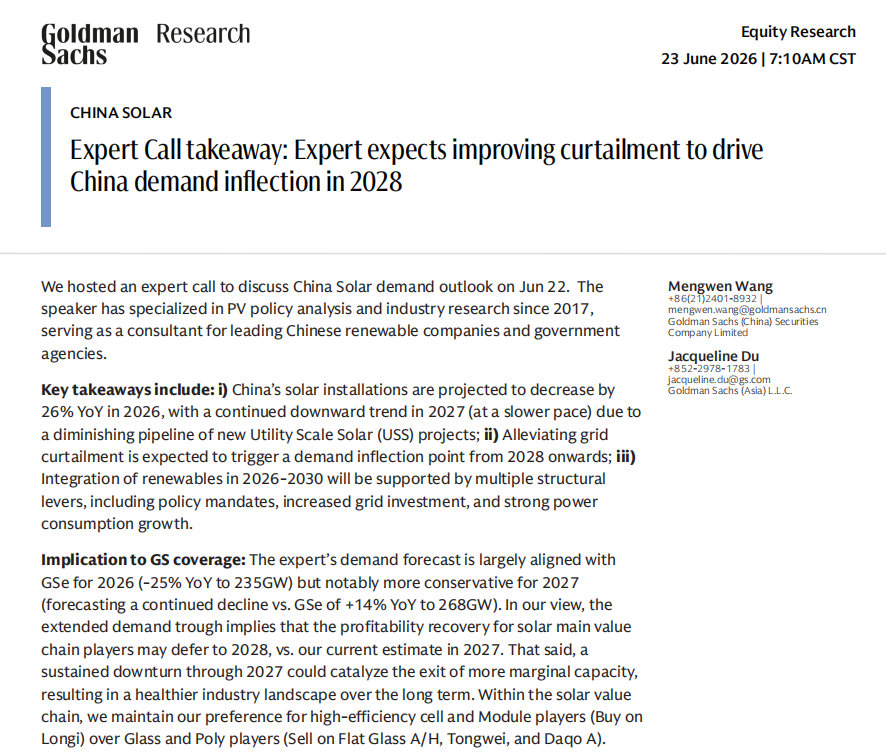
一句话核心：光伏不是不缺需求，而是"发的电用不掉"——电网消纳跟不上，导致装机需求要熬到 2028 年才见底回升。
背景与关键数据
- 光伏装机需求：每年新增多少太阳能发电。专家预测 2026 年同比 -26%，2027 年继续降但降幅收窄，2028 年后才迎拐点。
- 弃光（curtailment）：发出来的太阳能电因为电网送不出去、或用电端消纳不了，被迫"丢弃"不上网。弃光率越高，电站越赚不到钱。
- 集中式光伏：大型地面电站（西部荒漠那种），相对"分布式"（屋顶）更依赖长距离电网外送。
图片解读：这是高盛 2026 年 6 月 23 日的"China Solar"专家电话纪要，标题"Expert expects improving curtailment to drive China demand inflection in 2028"（专家预计弃光改善将带动中国需求在 2028 年迎来拐点）。要点与正文一致：需求低谷拉长、2028 年弃光改善是拐点关键、需要等大规模电网投资落地。
为什么重要 / 对市场和经济的含义：这对光伏产业链（硅料、电池片、组件、逆变器）是中期偏空的判断——产能过剩 + 需求低谷 = 价格战和盈利压力可能比市场以为的更久。但它也指向一个明确的"解药"和投资主线：电网（特高压、储能）才是打通光伏需求的钥匙。"现在等万亿电网投资落实"这句话，把投资关注点从"发电侧"引向了"电网/储能侧"。
延伸知识：为什么新能源会"装得越多、越用不掉"？ 太阳能、风能是"看天吃饭"的间歇性电源，发电高峰（正午大太阳）常常和用电高峰对不上，且西部发电、东部用电，需要长距离输送。如果电网（输送）和储能（错峰）跟不上，多发的电只能弃掉。这就是"消纳难题"——它说明能源转型的瓶颈正从"能不能发出绿电"，转移到"能不能把绿电送到、存住、用掉"。储能和电网，是理解新能源下半场的关键词。
帖 9 · 15:27 · 全球科技股暴跌、美元走强，新兴市场承压（Bloomberg）
标签：#金融#
帖子原文
bloomberg：华尔街迎来了现实的警觉，几家科技巨头遭遇猛烈抛售，科技股暴跌席卷全球股市，亚洲的跌幅更为明显，韩国 Kospi 指数从历史巅峰下跌了 10%，交易者密切关注 2900 亿美元投资于韩的杠杆 ETF。 美元强势也要负一点责任，交易员似乎对加息更加笃定。连累新兴市场货币 MSCI 指数下跌 0.2%，连跌延续至第四个交易日，MSCI 新兴市场股指下跌 0.21%，为自 2025 年 4 月以来最大单日跌幅。
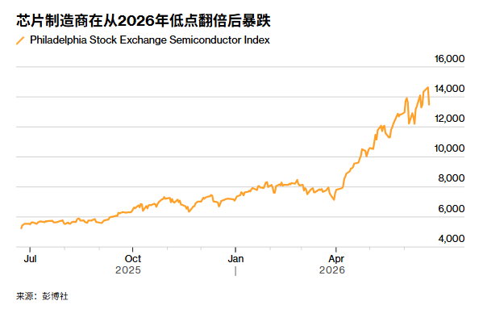
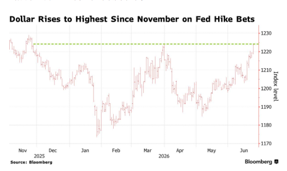
一句话核心：全球从"无脑买科技股"切换到避险——科技股领跌、美元走强、新兴市场被双杀（股和汇一起跌）。
背景与关键数据
- 韩国 Kospi 从历史高点 -10%，与帖 7 是同一事件的不同视角。
- "2900 亿美元杠杆 ETF"：大量资金通过带杠杆的 ETF 押注韩国/科技，杠杆放大了暴跌。
- "交易员对加息更加笃定"：市场预期美联储可能加息（或推迟降息）→ 美元走强。
- MSCI 新兴市场指数创"2025 年 4 月以来最大单日跌幅"，且新兴市场货币连跌 4 天。
图片解读
- 图 1（彭博）：标题"芯片制造商在从 2026 年低点翻倍后暴跌"，画的是费城半导体指数（SOX）。这条橙线从 2025 年 7 月约 4500 一路涨到 2026 年的约 1.4 万（翻了两倍多），最右端出现陡直的下跌——典型的"涨幅越大、回撤越急"。
- 图 2（彭博）：标题"Dollar Rises to Highest Since November on Fed Hike Bets"（押注美联储加息，美元创去年 11 月以来新高）。美元指数从 2026 年 1 月的低点约 1175 一路回升到约 1225（绿色虚线=去年 11 月高点）。
为什么重要 / 对市场和经济的含义：这帖把几条线索串成一个完整的宏观图景——"美元走强 → 全球流动性收紧 → 高估值科技股 + 新兴市场首当其冲"。强美元像抽水机，会把资金从新兴市场抽回美国，导致新兴市场"股汇双杀"。对中国、韩国等资产，这是一个需要警惕的外部逆风。
延伸知识：为什么"强美元"是新兴市场的噩梦？ 三条传导：①很多新兴市场企业借了美元债，美元升值=还债负担变重；②资金回流美国追逐更高、更安全的美元收益，新兴市场资本外流；③本币贬值会输入通胀，逼当地央行被迫加息、压制经济。所以美元指数（DXY）和美债收益率，是每个做全球资产配置的人都要盯的"总开关"。1997 亚洲金融危机、2013 "缩减恐慌（taper tantrum）"，背后都是强美元 + 资金回流。
帖 10 · 15:20 · 中国"广义财政赤字"5 月收窄，实体有"财政紧缩感"（高盛）
标签：#TAX#
帖子原文
高盛：我们把中国广义财政赤字作为看"政府实际对经济投放了多少信用和资金"，5 月指标收窄，赤字率从 -9.5% 收窄到 -8.5%。实体有"财政紧缩感"。财政收入表面不差，但并不说明经济内生动能很强。一方面 PPI 回升有助于名义收入，另一方面非税收入和印花税有一定扰动，不能简单理解为企业和居民现金流明显改善。中国财政 spend-through ratio 的 12 个月均值在 5 月略有上升。这说明之前已经筹集的财政资金，花出去的速度略有加快。但无法抵消土地收入下降和政策性银行支持收缩。
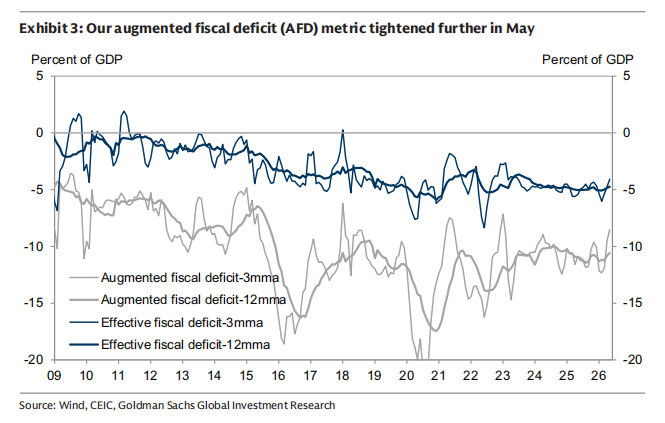
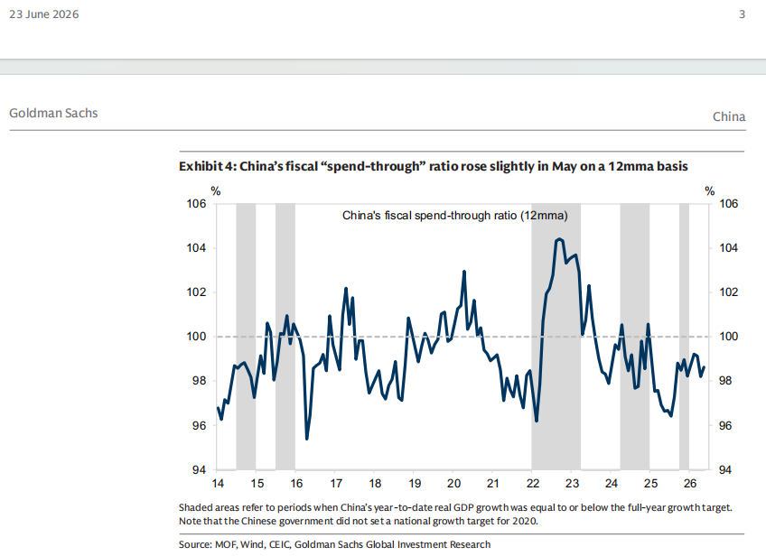
一句话核心：政府"放水"的力度在收，赤字收窄看起来像好事，但对实体经济其实是"紧缩感"——钱没那么松了。
背景与关键数据
- 广义财政赤字（高盛叫 Augmented Fiscal Deficit, AFD）：官方的预算赤字只是一部分，高盛把卖地、专项债、城投、政策性银行等"准财政"都算进来，得到一个更真实的"政府到底向经济投了多少钱"的口径。从 -9.5% 收窄到 -8.5%（赤字变小=投放变少）。
- 财政紧缩感：赤字收窄=政府支出相对收入在减少=对经济的刺激在退坡，所以实体感觉"钱紧了"。
- spend-through ratio（资金花出去的比率）：已经筹到的钱实际花出去多少。略升，说明花钱速度小幅加快，但抵不过卖地收入下滑。
图片解读
- 图 1（Exhibit 3）：高盛的"广义财政赤字"指标，灰线是 AFD（3 个月/12 个月均值），蓝线是"有效财政赤字"，纵轴是占 GDP 百分比。可以看到灰色 AFD 在 -10% 附近，最近向上收窄（赤字变小）。
- 图 2（Exhibit 4）：China's fiscal "spend-through" ratio（12 个月均值），围绕 100% 上下波动，5 月小幅回升，对应"花钱速度略加快"。灰色阴影是"实际增速达不到全年目标"的时期。
为什么重要 / 对市场和经济的含义：财政是当前中国经济最重要的"逆周期"工具（货币政策因为利率已低、效果有限）。高盛这帖的核心提醒是："赤字收窄"在账面上是财政纪律，但对正在磨底的经济，相当于过早撤掉支撑，可能让复苏更脆弱。它和帖 14（赤字 2023 年来首次收窄）、帖 15（GDP 下修）是同一条逻辑线——财政在"控支出"，而这会压制短期增长。
延伸知识："准财政（quasi-fiscal）"为什么这么重要？ 中国政府的真实刺激，很多不走"预算内"，而走城投、专项债、政策性银行（如国开行）等表外渠道。只看官方公布的赤字率（比如 3%、4%），会严重低估实际的财政扩张或收缩。所以高盛、IMF 都会编"广义/增扩赤字"口径来还原真相。这教我们一个方法论：看一国财政松紧，不能只看名义赤字率，要看把所有"准财政"加总后的真实投放。
帖 11 · 15:12 · 追觅"三年破万亿"，最后谁来买单？（南方人物周刊）
标签：#TAX#
帖子原文
南方人物周刊：最后由谁买单？ 谁的后面是谁买单？
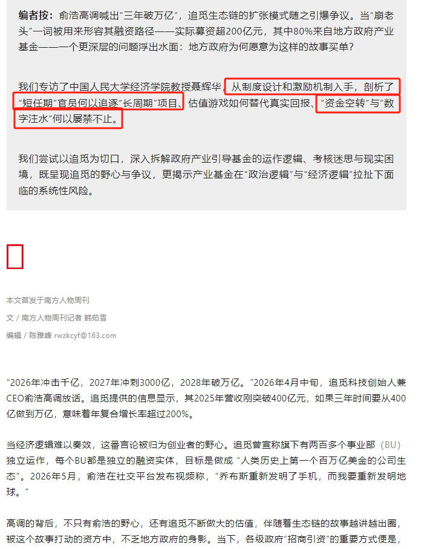
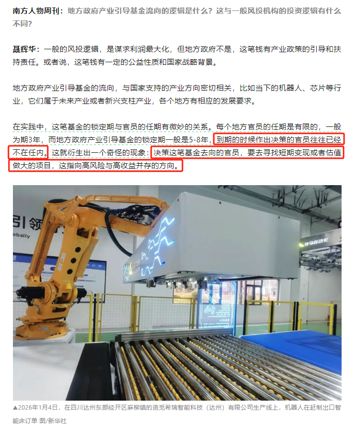
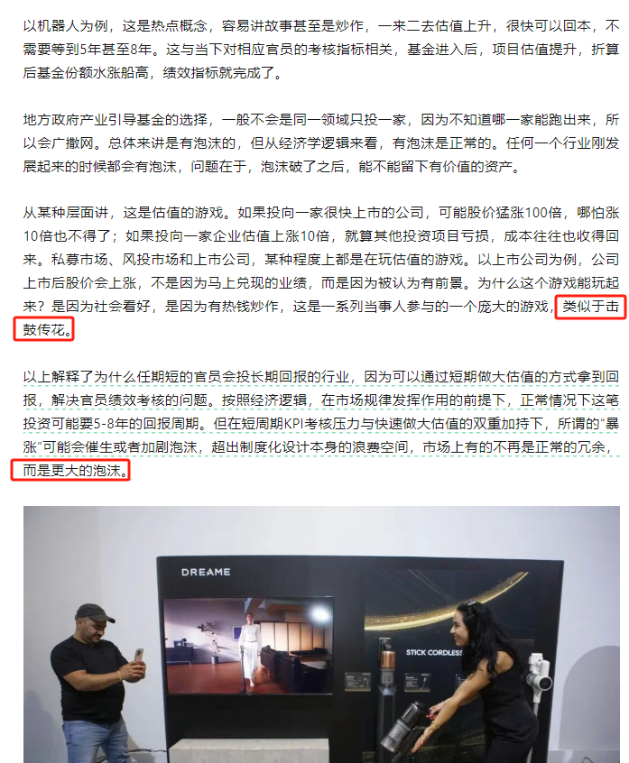
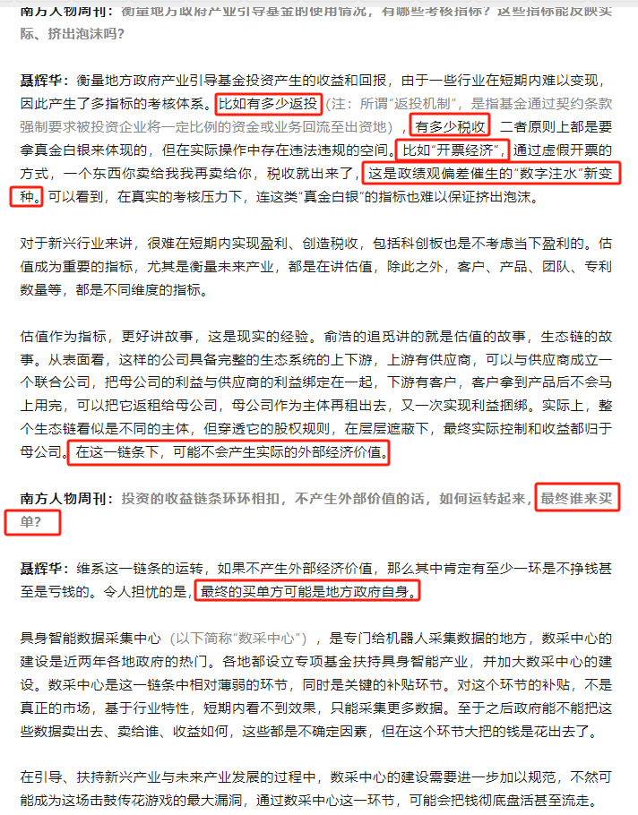
一句话核心：追觅喊出"三年营收从 400 亿做到万亿"（年复合增速 200%+），背后 80% 融资来自地方政府产业基金，而专家警告这可能是一场"估值游戏"，最终买单的是地方政府。
背景与关键数据
- 追觅科技创始人兼 CEO 俞浩高调放话："2026 年冲击千亿，2027 年冲刺 3000 亿，2028 年破万亿。" 追觅 2025 年营收刚破 400 亿，三年到万亿意味着年复合增长率超 200%——这是几乎违背商业常识的速度。
- 实际募资超 200 亿元，其中 80% 来自地方政府产业基金。
- 文章专访中国人民大学经济学院教授聂辉华，剖析"短任期官员为何追逐长周期项目""估值游戏如何替代真实回报""资金空转与数字注水为何屡禁不止"。
图片解读
- 图 1：文章编者按和开头，红框标出关键词——"短任期官员追逐长周期项目""资金空转""数字注水"。点明追觅实际募资超 200 亿、80% 来自地方政府产业基金。
- 图 2、图 3：追觅的机器人/产品与展示现场照片，配文讲其"生态链"扩张故事。
- 图 4：聂辉华的核心观点（红框密集）——地方产业基金的考核含"返投"（强制被投企业把资金/业务回流到出资地）、税收等指标，但"开票经济"等"数字注水"难以杜绝；这类生态链公司"可能不会产生实际的外部经济价值"；"最终的买单方可能是地方政府自身"。
为什么重要 / 对市场和经济的含义：这帖触及中国产业政策的一个深层风险——地方政府用产业引导基金"招商引资"，可能催生"为估值而估值"的泡沫。当官员考核看短期（任期 3–5 年）、企业讲的是长期故事（生态链、估值），二者一拍即合，但真金白银的回报、税收、就业可能都是"数字注水"。Jason 把它归到 #TAX# 标签下，是因为这本质关乎财政资金的使用效率和地方债务的隐性风险——钱投出去了，若不产生真实价值，最后是纳税人/地方财政买单。
延伸知识：什么是地方政府"产业引导基金"和"返投"？ 引导基金是地方政府出资设立、撬动社会资本一起投资某产业（半导体、新能源、机器人）的基金，目的是招商引资、培育本地产业。"返投"是常见的附加条件：你拿了我这个省的钱，就得把一定比例的投资/产值落回我这个省。初衷是好的，但容易异化——企业为拿钱配合做"返投""开票"凑指标，形成"资金空转"（钱在账面上转一圈、没创造真实价值）。这是理解中国"内卷式招商"和地方隐性债务的一把钥匙。
帖 12 · 14:58 · 财政从"投资于项目"转向"投资于人"（华创）
标签：#TAX#
帖子原文
华创：过去财政支出主要服务于土地开发和相关配套基建，以项目型投资为主；未来为了应对居民 K 型分化，财政支出需要从"投资于项目"转向"投资于人"。这主要体现在两个方面：一是推进基本公共服务均等化；二是建立健全与经济发展阶段相适应的更强有力的二次分配体系。 从国外经验看，如果用社保支出与所得税（包括个税和企业所得税）占 GDP 的比值来衡量二次分配力度，我国与发达国家相比仍有一定差距；因此，"十五五"时期"投资于人"正当其时，个税高增可直接传导至二次分配力度。今年前 5 个月，据国家税务总局："取得境外收入的纳税人累计补缴税款约 130 亿元"。
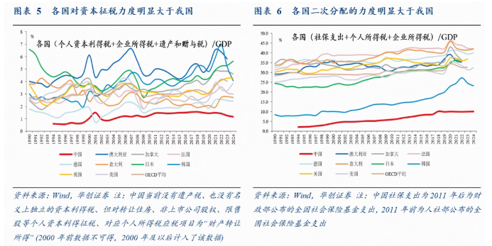
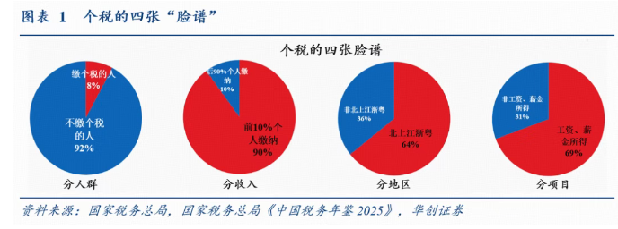
一句话核心：财政逻辑正在从"砸钱修路盖楼"转向"砸钱补贴人"——加强社保、教育、医疗等二次分配，来对冲贫富分化。
背景与关键数据
- "投资于项目" vs "投资于人"：前者是传统的基建/土地开发拉动；后者是把钱投向居民的社保、教育、医疗、养老等公共服务。
- 二次分配：市场按效率分配是"一次分配"；政府通过税收和转移支付（社保、补贴）再调节贫富差距，是"二次分配"。
- 用"社保支出+所得税 / GDP"衡量，中国二次分配力度低于发达国家，还有提升空间。
- "十五五"：第十五个五年规划（2026–2030 年）。
- 前 5 个月，境外收入纳税人累计补缴约 130 亿元——这是加强个税征管（尤其针对海外收入高净值人群）的实证。
图片解读
- 图 1（华创图表 5、6）：两张国际对比折线图，比较各国"（个人+企业所得税）/GDP"和"二次分配力度"。结论是中国的所得税占比和再分配力度，明显低于美、日、欧等发达国家，意味着提升空间大。
- 图 2（华创图表 1）"个税的四张脸谱"：四个饼图揭示中国个税的高度集中——只有约 8% 的人实际缴个税（92% 不缴）；前 10% 的人贡献约 90% 的个税；地区上北上江浙粤贡献约 64%；项目上工资薪金占大头。
为什么重要 / 对市场和经济的含义：这是理解中国中长期政策方向的重要一帖。"投资于人"如果落实，意味着财政重心从"重投资"转向"重民生/消费"，长期利好消费、社保相关板块，也是破解"内需不足、贫富分化"的结构性药方。同时，"个税高增→强化二次分配"暗示对高收入、海外收入人群的征管会更严（130 亿补缴就是信号）。把帖 10、11、12、14 连起来看：财政在"控总量"的同时，正在"调结构"——少投项目、多投人，并加强对高收入的征税。
延伸知识："一次分配、二次分配、三次分配"是什么？ 一次分配是市场按生产要素（劳动、资本）分钱，追求效率；二次分配是政府用税收+财政支出（社保、补贴、转移支付）来调节，追求公平；三次分配是慈善、捐赠等自愿行为。一个社会的"公平度"很大程度取决于二次分配的力度。个税是二次分配最重要的工具之一——"只有 8% 的人缴个税"说明中国个税的"调节贫富"功能还很弱，这也是未来税改的重点方向。
帖 13 · 14:49 · 美伊"缓步推进"：核检查、解冻资金、霍尔木兹与油价（zerohedge）
标签：#金融#
帖子原文
zerohedge：美伊缓步推进
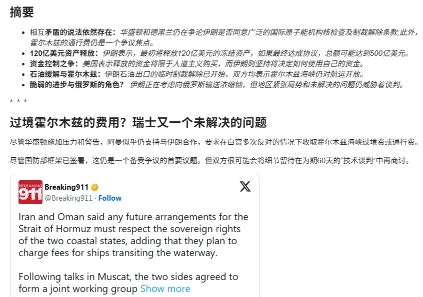
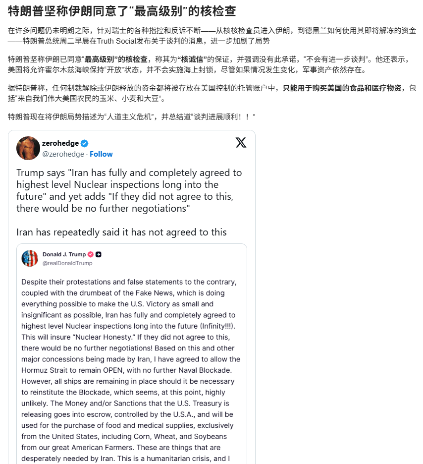
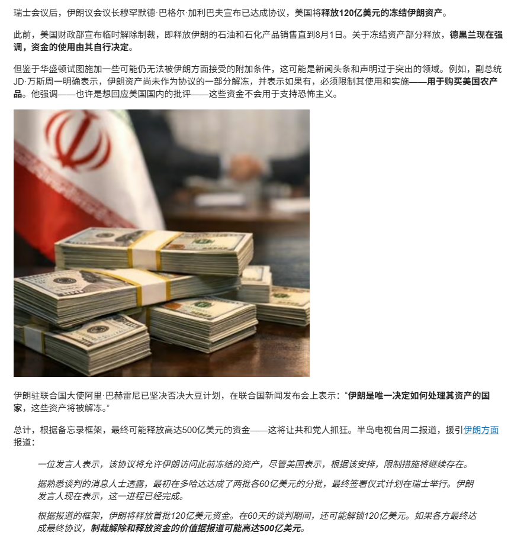
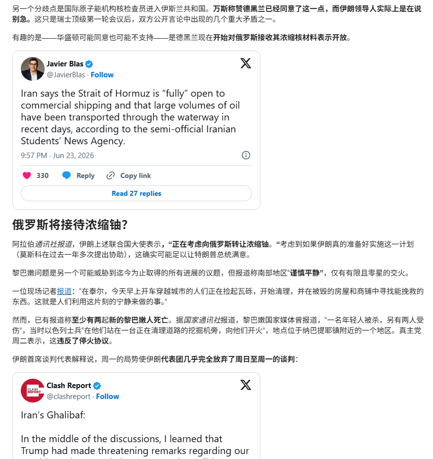
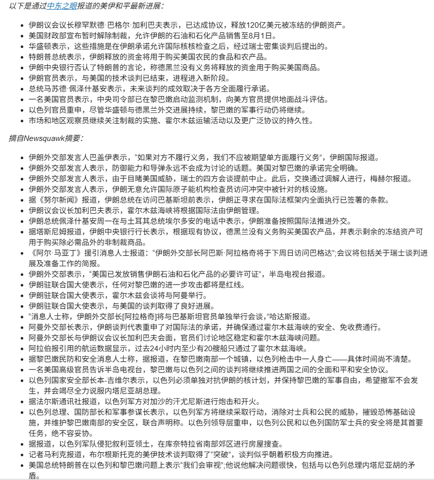
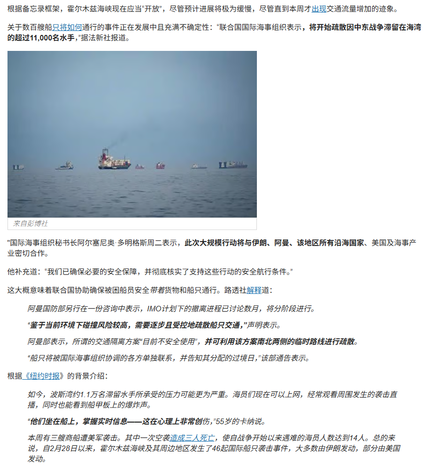
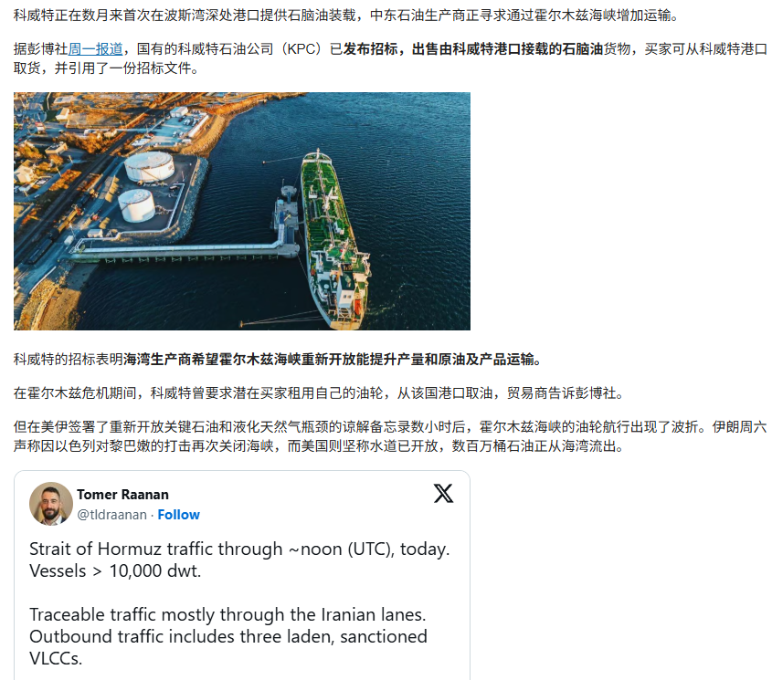
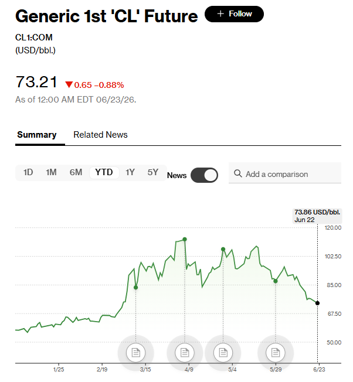
一句话核心：美伊核谈/制裁缓和在"小步往前挪"——伊朗可能解冻百亿美元资产、霍尔木兹通行如常，结果是油价被压到 73 美元。
背景与关键数据（来自配图要点）
- 资金解冻：伊朗表示最初将释放约 120 亿美元冻结资产，若最终达成协议，总额可能达 500 亿美元；美国称释放资金限于人道主义用途。
- 核检查分歧：特朗普坚称伊朗已同意"最高级别"的核检查，但伊朗反复表示并未同意——双方对协议措辞各有解读，仍是未决争议。
- 霍尔木兹海峡：伊朗与阿曼称，海峡安排须尊重两国主权，并计划对过境船只收费；并成立联合工作组。油轮跟踪显示海峡通行基本正常（含数艘被制裁的 VLCC 满载出港）。
- 俄罗斯角色：伊朗在考虑向俄罗斯输送浓缩铀，但地区紧张和未决问题仍威胁进程。
图片解读
- 图 1：事件"摘要"+ Breaking911 推文（霍尔木兹收费、成立联合工作组）。
- 图 2：特朗普关于"最高级别核检查"的表态，与"伊朗否认已同意"形成对照。
- 图 3：伊朗国旗+成捆美元的配图，对应"解冻资金"。
- 图 4：多条推文，涉及霍尔木兹"完全开放"通行、以及伊朗官员称特朗普曾有"威胁性言论"。
- 图 5：谈判细节要点（核计划/制裁/资金的多条款）。
- 图 6：油轮在海峡航行的照片+局势文字。
- 图 7：霍尔木兹海峡卫星航迹图 + TankerTrackers 推文："今日海峡通行基本正常，多走伊朗航道，出港含三艘被制裁满载 VLCC。"
- 图 8（彭博）：WTI 原油（Generic 1st 'CL' Future）报价 73.21 美元/桶，跌 0.88%，截至 06/23/26。YTD 走势显示油价从 2026 年初冲高到约 110，4 月后一路回落到 67–73 区间。
为什么重要 / 对市场和经济的含义：中东、霍尔木兹（全球约 1/5 石油海运经过的咽喉）是油价最大的地缘"尾部风险"来源。美伊"缓步推进"= 冲突降级预期 + 伊朗石油可能更多回归市场 → 利空油价（图 8 印证了从 110 跌到 73）。油价回落对全球是"反通胀"利好（降低运输、能源成本），有助于央行降息空间；但对产油国和能源股则是压力。把帖 6（俄油）和帖 13（伊油）一起看，今天的能源主线就是"供给宽松、油价承压"。
延伸知识：为什么霍尔木兹海峡是"全球油市的命门"？ 它是波斯湾通往外海的唯一出口，沙特、伊拉克、科威特、阿联酋、伊朗的石油大多从这里运出，约占全球海运石油的 20% 以上。任何"封锁霍尔木兹"的威胁都会让油价瞬间跳涨（风险溢价）；反之，局势缓和、通行如常，风险溢价消退、油价回落。所以交易员会盯着"油轮航迹"这种另类数据（alternative data）来实时判断地缘风险——这也是现代宏观交易"用卫星/船舶数据看世界"的一个缩影。
帖 14 · 11:30 · 中国预算赤字 2023 年来首次收窄（Bloomberg）
标签：#TAX#
帖子原文
Bloomberg：中国在控制财政支出以缩减赤字
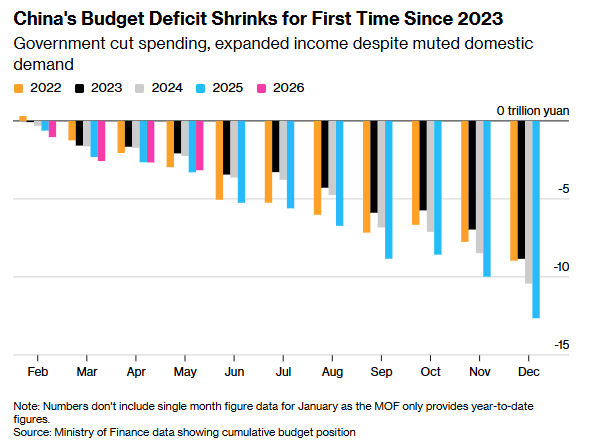
一句话核心：在内需依然疲弱的背景下，中国政府选择"控支出、增收入"，预算赤字出现 2023 年以来的首次收窄。
背景与关键数据
- 标题"China's Budget Deficit Shrinks for First Time Since 2023"，副标题"Government cut spending, expanded income despite muted domestic demand"（尽管内需疲软，政府仍削减支出、扩大收入）。
- 数据来自财政部的"累计预算差额"，因 1 月数据财政部只给年初至今值，故图中从 2 月起。
图片解读：这是彭博的柱状图，横轴是月份（2 月→12 月，累计），不同颜色代表不同年份（2022–2026）。2026 年（粉/品红）的累计赤字明显小于前几年（柱子最短、最靠近 0）；而 2025 年（蓝）是赤字最深的一年，年底逼近 -14 万亿元。直观对比就能看出 2026 年财政在主动"收口"。
为什么重要 / 对市场和经济的含义：这帖是帖 10（广义赤字收窄）的"官方预算版"印证，二者互为佐证：中国财政正在主动控支出、缩赤字。在经济磨底期主动收紧财政，市场会担心"逆周期力度不够、复苏后劲不足"，这也解释了为什么同一天高盛会下修二季度 GDP（帖 15）。对资产价格的含义是：短期内别期待"大水漫灌"式的财政强刺激，更可能是"精准滴灌"+ 结构调整（投资于人）。
延伸知识："顺周期"还是"逆周期"财政？ 教科书主张财政应"逆周期"——经济差时多花钱（扩赤字）托底，经济好时少花钱（收赤字）防过热。如果经济还在磨底时就收缩赤字，被称为"顺周期紧缩"，容易加深下行（欧债危机后南欧的"紧缩政策"是经典反面教材）。所以"赤字收窄"这件事是好是坏，要看时机：在过热期是纪律，在低谷期可能是"撤梯子"。这是判断财政政策得失的关键视角。
帖 15 · 11:13 · 高盛下修中国二季度 GDP，三季度看反弹（高盛）
标签：#经济数据#
帖子原文
高盛：中国 5 月份活动数据继续令人失望，我们根据 4 月和 5 月疲软的数据，将第二季度实际 GDP 预测从 4.0%（季调年化）下调至 3.5%，这意味着同比增速为 4.5%（此前为 4.7%）。假设油价走低、财政支出加快以及天气条件恢复正常，我们预计第三季度实际 GDP 增长将反弹至 5.0%（季调年化，此前为 4.5%）。我们全年实际 GDP 增长预测保持不变，为 4.7%。
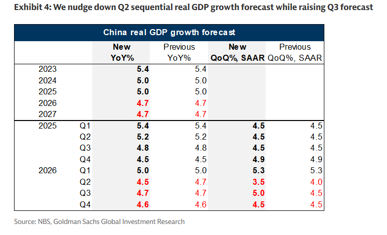
一句话核心：高盛因为 4–5 月数据疲软，把二季度 GDP 下调（环比年化 4.0%→3.5%），但把三季度上调（4.5%→5.0%），全年 4.7% 不变——"前低后高"。
背景与关键数据
- 季调年化（QoQ SAAR）：把一个季度的环比增速，按"如果全年都这么增长"折算成年率，是国际通用、对短期变化更敏感的口径。二季度从 4.0% 下调到 3.5%。
- 同比（YoY）：和去年同期比。二季度同比从 4.7% 降到 4.5%。
- 上调三季度（5.0% SAAR）的三个假设：油价走低（呼应帖 13）、财政支出加快（呼应帖 10/14 的"花钱提速"）、天气恢复正常。
- 全年实际 GDP 4.7% 维持不变。
图片解读：这是高盛的"中国实际 GDP 增长预测表"（Exhibit 4）。
- 年度 YoY%：2023 年 5.4、2024 年 5.0、2025 年 5.0、2026 年 4.7（与前次相同）、2027 年 4.7。
- 季度 QoQ SAAR：2026 Q1 5.3 → Q2 新 3.5（前 4.0） → Q3 新 5.0（前 4.5） → Q4 4.5。红色数字是本次调整过的项，清楚显示"砍二季、抬三季"。
为什么重要 / 对市场和经济的含义：这是今天所有"中国宏观偏弱"信号的一个总结——5 月活动数据（投资、消费、生产）疲软，连最主流的卖方都在下修短期增长。但高盛维持全年 4.7%，靠的是"三季度反弹"的假设，而这个反弹高度依赖"财政加速 + 油价回落"。所以这帖其实把今天的几条线索缝在了一起：财政（帖 10/14）、油价（帖 13）、内需疲软，共同决定下半年中国经济能否如期"前低后高"。
延伸知识："环比年化"和"同比"为什么会给出不同的故事？ 同比（YoY）和去年同期比，能消除季节性、但反应慢（受去年基数影响大，俗称"基数效应"）；环比年化（QoQ SAAR）反映"最近这个季度的真实动能"，更灵敏但也更"吵"。看经济拐点要用环比，判断趋势用同比。高盛"下调环比、维持全年"，正是因为它认为二季度的走弱是"节奏问题"而非"趋势逆转"——这种"砍当期、补后期"的调法，恰恰最考验那些"后期反弹"的假设能否兑现。
今日全图索引
| 帖号 | 时间 | 主题 | 标签 | 配图文件 |
|---|---|---|---|---|
| 1 | 16:50 | 野村：一线二手房回暖 vs 全国低迷、AI 财富效应 | #房价# | post1_img1.png |
| 2 | 16:35 | 招商银行 2026 中国经济预测表（"招银算命"） | #经济数据# | post2_img1.png |
| 3 | 16:31 | 国金：分面积段房价，豪宅抗跌/微型企稳，两种情形 | #房价# | post3_img1~3.png |
| 4 | 15:58 | 国泰海通：11 家 AAA 城投被下调，非标舆情 | #TAX# | post4_img1.png |
| 5 | 15:52 | 摩根士丹利：西方稀土永磁瓶颈与"安全溢价" | #经济数据# | post5_img1.png |
| 6 | 15:46 | zerohedge：特朗普促乌"更大胆"，俄油出口创新高 | #金融# | post6_img1.png |
| 7 | 15:37 | JPM：韩股闪崩 10%，拥挤交易去杠杆 | #股市# | post7_img1.png |
| 8 | 15:33 | 高盛：中国光伏需求低谷拉长至 2028，弃光 | #TAX# | post8_img1.png |
| 9 | 15:27 | Bloomberg：全球科技股暴跌、美元走强、新兴市场承压 | #金融# | post9_img1~2.png |
| 10 | 15:20 | 高盛：中国广义财政赤字收窄，"财政紧缩感" | #TAX# | post10_img1~2.png |
| 11 | 15:12 | 南方人物周刊：追觅"三年破万亿"，谁来买单？ | #TAX# | post11_img1~4.png |
| 12 | 14:58 | 华创：财政"投资于项目"转"投资于人"、二次分配 | #TAX# | post12_img1~2.png |
| 13 | 14:49 | zerohedge：美伊缓步推进，霍尔木兹与油价 73 | #金融# | post13_img1~8.png |
| 14 | 11:30 | Bloomberg：中国预算赤字 2023 年来首次收窄 | #TAX# | post14_img1.png |
| 15 | 11:13 | 高盛：下修中国 Q2 GDP 至 3.5% SAAR，Q3 看反弹 | #经济数据# | post15_img1.png |
本报告由自动化任务生成，内容为对 Jason 不跪当日公开帖子的客观转述与科普解读，不构成任何投资建议。配图来自原帖，仅供学习参考。